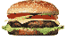
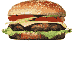

De: La Frikipedia, la enciclopedia extremadamente seria.
De: La Frikipedia, la enciclopedia extremadamente seria. De: La Frikipedia, la enciclopedia extremadamente seria.
| De la serie alimentos y otras vainas: | ||
|
| ||
| Nombre: | Big Mac | |
| Tipo de Comida: | Hamburguesa | |
| ¿Como se Come? | Con la boca | |
| ¿De donde Proviene? | USA | |
| Ingrediente Basico: | Pseudocarne | |
| Forma de Presentación | En platos de unicel | |
| Sabor: | ?? | |
La pseudocarne es un invento de industrias Huele Mal, Inc. en colaboración con BurriKing y McRonalds.
Inicialmente se fabricaba a base de geranios resecos, gomas de borrar, restos de la comida de los martes, neumáticos usados, ratas putrefactas e inmundas, polirresinas termofusionadas con hiperplátanos bananaicos con calcio y omega3, proteinas derivadas de la derivación derivada de la leche de polvo derivada de la leche derivada de vacas artificiales derivadas de vacas reales turboalimentadas y el ingrediente secreto: jarabe a base de terrones de azúcar con óxido de dihidrógeno, una peligrosísima sustancia que inhalada puede ser mortal.
Un accidente en la producción de pseudocarne en la fábrica de Huele Mal en el año 1992 provocó una nube tóxica en la ciudad de Chichiburgo, sede de la compañía, dando al traste con los vendedores de cupones que por aquel entonces buscaban setas. La escasez de setas (y de cupones) hizo decrecer espectacularmente la esperanza de vida de la poblacion chichiburguiana, cuyo principal sustento era el cultivo de hongos y la venta de billetes falsificados.
 Alimentos  Alimentos 
|
|---|
| Arroz con leche • Asado • Atún • Atún claro calvo • Bizcocho • Boomer • Chicle • Chocolate • Chorizo • Choripán • Choripavo • Cruasán • Flan • Galleta • Galleta danesa • Gominola • Granola • Hamburguesa • Hot dog • Huevo Kinder • Jamón serrano • Kebab • Lacasito •Pan • Pan Bimbo • Pan con tomate • Pizza • Pizza de piña • Pseudocarne • Queso • Queso rallado • Queso suizo • Repollo • Salsa de soja • Sugus • Taco • Taco gringo • Tamal • Tapa • Tetra • Torta • Tortilla • Tortilla de patata • Tostacos • Waffles |
| Burger King ♦ Kentucky Fried Chicken ♦ La Pasiva ♦ McDonald's ♦ Pizza Hut ♦ Telepizza |
Autor(es):